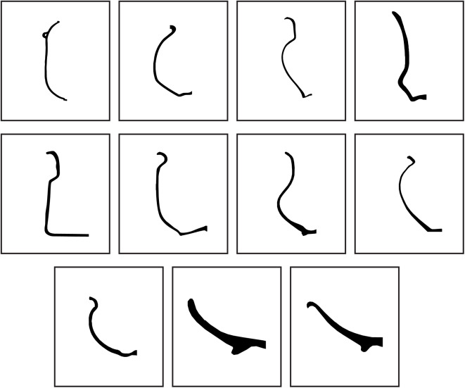

Dataset
Our fragment dataset was generated with 1,052 Iberian vessels, by fragmenting
every mesh between 2 and 10 times. The number of iterations for every number of fragments
was linearly interpolated in [25, 15], hence generating 25 fragments while breaking models into 2 pieces.
The fragmentation was stopped for every mesh once 1k fragments were obtained.
A total of 1,040,428 point clouds and triangle meshes have been released together with 187,257 voxelizations.
From these, 1,052 are dedicated to storing the original mesh. Triangle meshes are saved in their
original format, as obtained from marching cubes, point clouds were sampled with 1004 points, and voxelizations
have a resolution of up to 1283.
Accessing the dataset
The whole fragment data is available at our research institute's page.
However, two lighter versions have been released since the complete dataset is too heavy (450 GB). Moreover, we
encourage the readers to primarily use the Zenodo dataset if your work is centred on implicit data/voxels.
In summary, these are the available datasets:
-
3GB dataset composed only of voxel data, published in Zenodo.
-
The whole fragment dataset, split into eight files of ~50GB (totalling 450GB)
with compressed voxel data, point clouds and triangle meshes.
-
A lighter version of uncompressed triangle meshes and
point clouds (vessels_200_obj_ply_no_zipped.zip; 27 GB). This is mainly intended for testing the dataset since it only contains
decimated fragments of 200 models, with no individual zipping. However, note that these are provided as triangle meshes and point
clouds derived from marching cubes, and may have more geometric inaccuracies.
Decompress binary files
We have provided sample scripts to decompress meshes, point clouds and voxels. Decompression for mesh and voxel has been implemented in
Python, where point clouds are decompressed in C++ since it requires the Point Cloud Library (PCL).

Vessel classification
The root name of the files in our dataset belongs to a vessel category, as detailed in a previous work of ours.
This a yet unexplored branch since archaeological artefacts are hardly found intact; indeed, it is rather common to find small fragments. All these
factors harden their digitization, and therefore, any application operating over 3D archaeological artefacts is hard to reproduce in the real-world.
Yet, we provide a class.csv file for any future work that may find helpful this vessel categorization.

Eleven vessel profiles, as annotated in the provided class_vessel.csv file